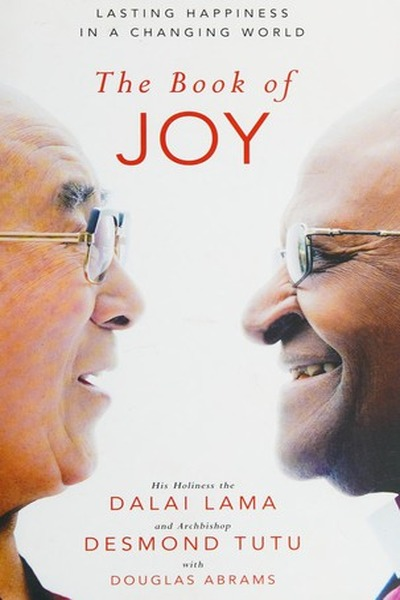

Library › Self-Improvement
The Book of Joy — Summary & Key Lessons

Two spiritual giants on finding joy in a world of suffering — the science and practice of happiness.
📖 OPEN THE FULL INTERACTIVE BREAKDOWN →🌐 Read it in Hindi, Hinglish, Gujarati, Tamil & 22 more languages — free, with audio.
💡 The Big Idea
Over a week of conversations in Dharamsala, the Dalai Lama and Desmond Tutu — both of whom endured exile and oppression — map the anatomy of joy: it is a way of being that survives suffering, not a mood that requires good fortune. Their eight pillars — perspective, humility, humor, acceptance, forgiveness, gratitude, compassion, generosity — are practices, each trainable, and each backed by both ancient wisdom and modern psychology.
🧠 The 6 Key Lessons
Lesson 1: Joy Is a Skill, Not a Stroke of Luck
Chapter 1: The Nature of Joy
Both men agree on a radical premise: joy is not the byproduct of favorable circumstances but a capacity that can be cultivated like any skill. They distinguish joy from happiness — happiness depends on what happens, joy depends on how you meet what happens. That distinction is liberating: if joy were luck, we'd be stuck; because it's a skill, we can practice.
📖 Example: Tutu faced decades of apartheid's brutality and still radiates laughter; the Dalai Lama lost his country and still carries warmth. Neither denies the suffering — both demonstrate that meeting pain with training changes its weight. Their joy was not given to… Read the full example →
⚡ Do this: Reframe joy as a skill: pick one joy-practice (gratitude, humor, compassion) and treat it like a daily workout for 30 days.
Lesson 2: Perspective: Pain Is a Teacher You Didn't Choose
Chapter 2: Perspective
The Dalai Lama's formula: suffering that cannot be changed should be accepted and mined for learning, while suffering that can be changed should be attacked with action. Perspective is the ability to ask 'what can I learn here?' even in pain. The same adversity that breaks one person becomes another's curriculum.
📖 Example: When asked how he can smile after decades of exile, the Dalai Lama answers that the suffering gave him opportunities to practice compassion and patience he might never have developed otherwise. He did not choose the exile; he chose the meaning made of it. Read the full example →
⚡ Do this: In your current difficulty, write what the situation can teach you that comfort never would — and what part you can still act on.
Lesson 3: Humility Is the Foundation of All Other Virtues
Chapter 3: Humility
Both men trace their resilience to humility: the accurate sense that you are one small part of a vast whole. Humility deflates the ego that suffering inflames — 'why me?' becomes 'why not anyone?' — and opens the door to humor, forgiveness and learning. The humble person cannot be humiliated, because their worth was never on the throne.
📖 Example: Tutu, an archbishop and Nobel laureate, still jokes about his own importance and insists the movement was bigger than any leader. That deflation of ego is precisely why neither exile nor prison could take their dignity — it was never stored in status. Read the full example →
⚡ Do this: Practice one small act of self-deflation daily — laugh at yourself, do an anonymous task, credit others — and notice the freedom it creates.
Lesson 4: Forgiveness Is a Gift You Give Yourself
Chapter 4: Forgiveness
Both men, victims of profound injustice, teach that forgiveness is not about the offender — it is about freeing yourself from the prison of resentment. They distinguish forgiving from forgetting or excusing: you can demand justice while releasing the hatred that would otherwise poison your own system. Forgiveness is the most selfish act of self-care.
📖 Example: The Dalai Lama says he holds no anger toward the Chinese authorities, not because he excuses the occupation but because anger would consume the very freedom he seeks to preserve. Tutu chaired the Truth and Reconciliation Commission — not to erase memory, but… Read the full example →
⚡ Do this: Identify one grudge you're carrying and ask: is this resentment protecting me or poisoning me? Take one step toward releasing it.
Lesson 5: Gratitude Rewires the Brain for Joy
Chapter 5: Gratitude
The science in the book confirms what both men practice: deliberate gratitude shifts attention from what's missing to what's present, measurably lifting mood, health and relationships. Gratitude is not denial of hardship; it is the discipline of noticing the gifts that hardship doesn't touch. The practice is simple and the evidence is strong.
📖 Example: Studies cited in the book show people who keep gratitude journals report better sleep, more energy and stronger relationships within weeks. The Dalai Lama's morning practice includes listing the day's gifts before listing its tasks — attention trained toward… Read the full example →
⚡ Do this: Keep a daily gratitude practice: three specific things each night, written, for one month — and watch your baseline shift.
Lesson 6: Compassion Is the Practical Response to Suffering
Chapter 6: Compassion
The book's summit: both men agree that compassion — feeling others' suffering and acting to relieve it — is both the source and the expression of joy. Paradoxically, the way out of our own pain is through others' pain. Generosity and service turn the mind outward, where joy lives, instead of inward, where suffering echoes.
📖 Example: Tutu's work after apartheid and the Dalai Lama's global teaching are both sustained acts of compassion that returned to them as joy. Every study cited shows helpers report higher happiness than the helped — the loop closes in the giving. Read the full example →
⚡ Do this: Extend one act of compassion this week toward someone outside your usual circle — and notice what it does to your own state.
✅ 5-Step Action Plan
- Treat joy as a trainable skill with a daily practice for 30 days
- Write what your current difficulty can teach you
- Practice one act of self-deflation daily
- Take one step toward releasing a grudge this month
- Keep a three-item gratitude journal nightly
⚠️ When This Doesn't Work
⚠️ When this doesn't work: The wisdom assumes basic safety and support — asking someone in active abuse, severe depression or acute trauma to 'find perspective' or 'forgive' can do real harm. Forgiveness is a choice, never an obligation, and professional help beats spiritual practice alone for clinical conditions. Use these tools from a place of stability.
💀 The Graveyard Proves It
🔨 MC Hammer — $33 Million Burned in Three Years. Burn: Peak wealth ~$33M → bankruptcy with $13M debt. Read the full case study →
💬 Best Quotes from The Book of Joy
- “I believe that the very purpose of our life is to seek happiness.”
- “Joy is much bigger than happiness. While happiness is often seen as being dependent on circumstances, joy is not.”
- “There is no point in being unhappy about things you cannot change.”
Interactive version: mark lessons as read, listen in your language, share quote cards.